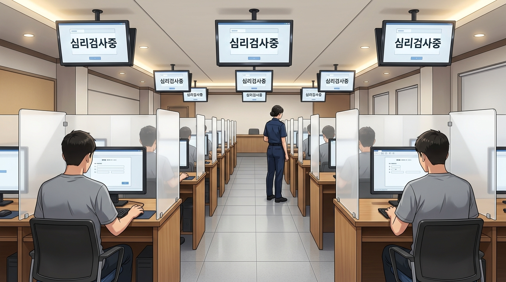

Asset Catalog
병역판정검사 스토리 전체 배경 갤러리
비주얼노벨 게임 내 씬 순서(Scene 0 ~ Scene 13) 및 심리검사장 후보 시안, 에피소드 커버 모음
메인 스토리 검사진행 순서 배경 (Scene 0 ~ 13)
 Scene 0 & 1
Scene 0 & 1
민우의 자취방
도입부 통지서 수령, 검사 당일 아침 출동 준비
assets/room.jpg Scene 4
Scene 4
병무청 종합민원실 로비
접수 안내, 본인확인 및 등록 데스크
assets/lobby.jpg Scene 5
Scene 5
탈의실 및 사물함 보관소
수검복 환복 및 검사용 스마트밴드 착용
assets/locker_room.jpg Scene 7 (현재 활성)
실제 보도영상 구도 + 한글 슬라이드
Scene 7 (현재 활성)
실제 보도영상 구도 + 한글 슬라이드
심리검사실 (중앙 통로 시점 & 선명한 한글 슬라이드)
실제 병무청 뉴스 영상 구도 반영, 좌우 천장 대형 TV(신상명세서/심리검사 안내) 및 전면 스크린 한글 완벽 구현
assets/exam_room.jpg Scene 8
Scene 8
임상병리검사실
혈액 및 소변 검사, 채혈실
assets/lab_room.jpg Scene 8-2
Scene 8-2
방사선 영상의학실 (흉부 X-ray)
흉부 엑스레이 촬영실
assets/xray_room.jpg Scene 9
Scene 9
기본 신체계측실
신장, 체중(BMI), 시력, 혈압 측정실
assets/body_measure_room.jpg Scene 10
Scene 10
병역판정전담의사 진료실
과목별 전문 진료 및 면밀한 신체검사
assets/doctor_room.jpg Scene 11
Scene 11
적성분류실
자격·면허 및 전공 기반 군 특기 적성 분류
assets/aptitude_room.jpg Scene 12
Scene 12
수석판정관 판정실
최종 병역등급(1~7급) 심의 및 병역처분 결정
assets/adjudicator_room.jpg Scene 13
Scene 13
수검자 대기실 & 휴게공간
검사 전후 대기 및 병무 정보 열람 공간
assets/restroom.jpg 부속 센터
부속 센터
병역진로설계지원센터
1:1 맞춤 군 복무 진로 상담 및 직무 탐색 센터
assets/career_center.jpgScene 7 심리검사장 시안 비교
100% AI (현재 적용)
순수 AI 시안 A: CBT 정신건강검사
100% AI 단독 생성본. 실제 보도영상 중앙 통로 구도, 모니터에 '정신건강 검사' 문항과 사지선다 체크박스 [1][2][3][4], 진행상황 게이지 바 완벽 재현
 100% AI 시안 B
100% AI 시안 B
순수 AI 시안 B: 디지털 분석 대시보드
100% AI 단독 생성본. 글자 왜곡이 전혀 없도록 원형 차트, 막대그래프, 상태 게이지 등 하이테크 그래픽 대시보드로 구성된 모던 CBT 검사실
 100% AI 시안 C
100% AI 시안 C
순수 AI 시안 C: 측면 와이드 구도
1열 칸막이 좌석, 좌측 검사 안내 데스크, 텍스트 일체 없는 깔끔한 인테리어

100% AI 시안 D순수 AI 시안 D: 3열 행잉 모니터
3열 행잉 모니터 천장 설치, 우측 전면 감독관 데스크 구도
에피소드 선택 카드 커버 (EP 1 ~ 4)

EPISODE 01
통지서가 도착했다!

EPISODE 02
신체검사의 모든 것

EPISODE 03
판정의 순간

EPISODE 04
나의 길을 찾아서